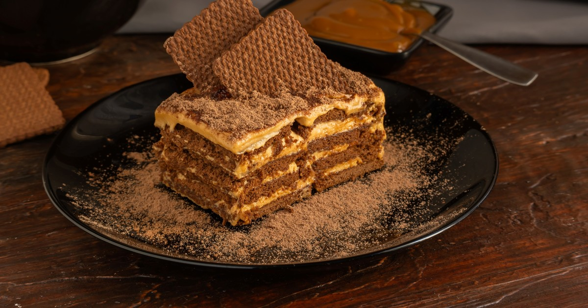

chocotorta
Ingredientes
- Chocolinas
- Café
- Queso crema
- Dulce de leche repostero
Preparación
Humedecer las chocolinas en el café
Mezclar el queso crema con el duelce de leche repostero
En un recipiente rectangular colocar las chocolinas previamente humedecidas
Ir intercalando entre una base de chocolinas y una capa de la mezcla de queso crema y dulce de leche
